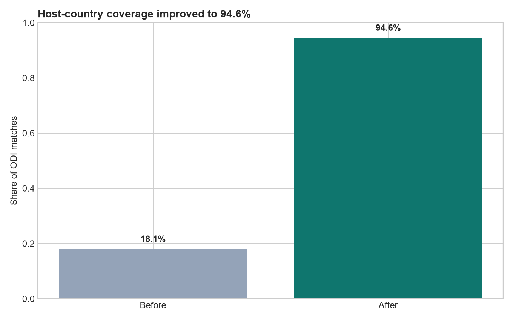
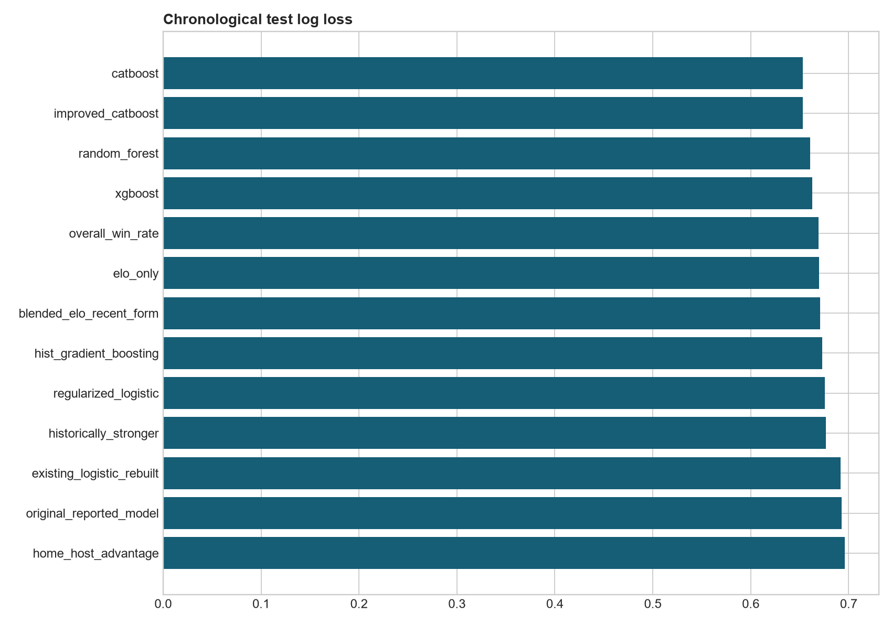
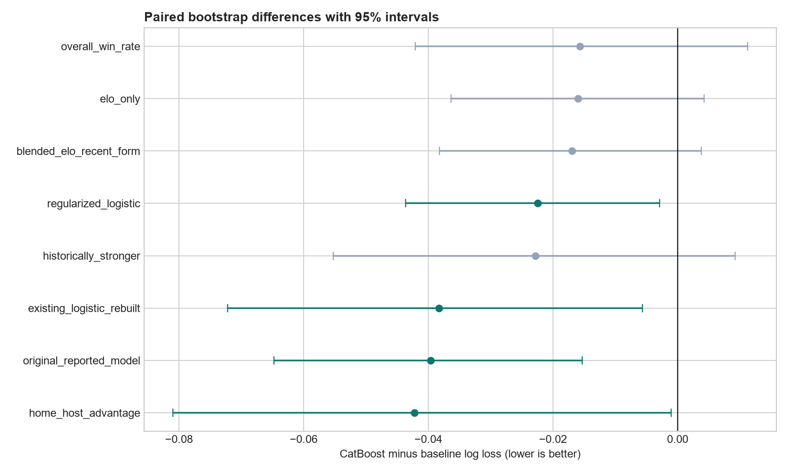
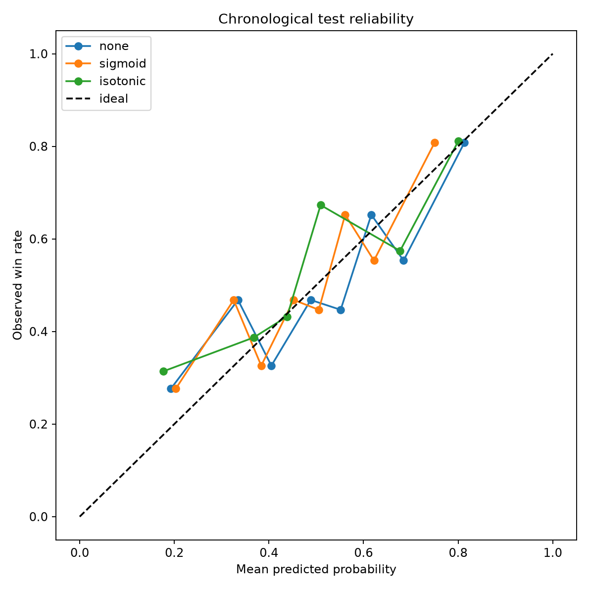
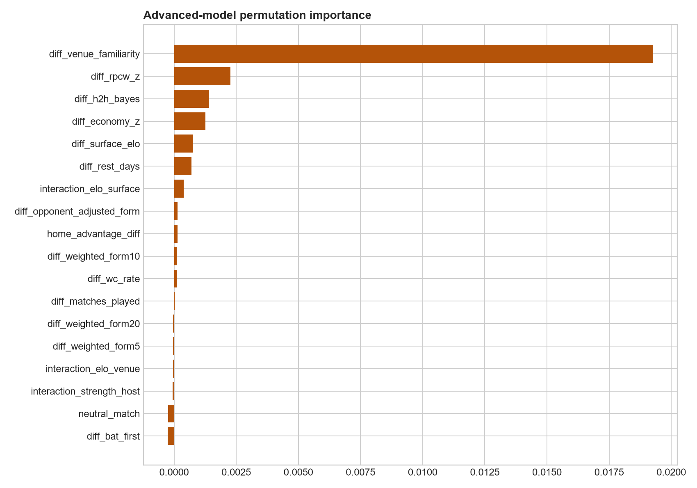
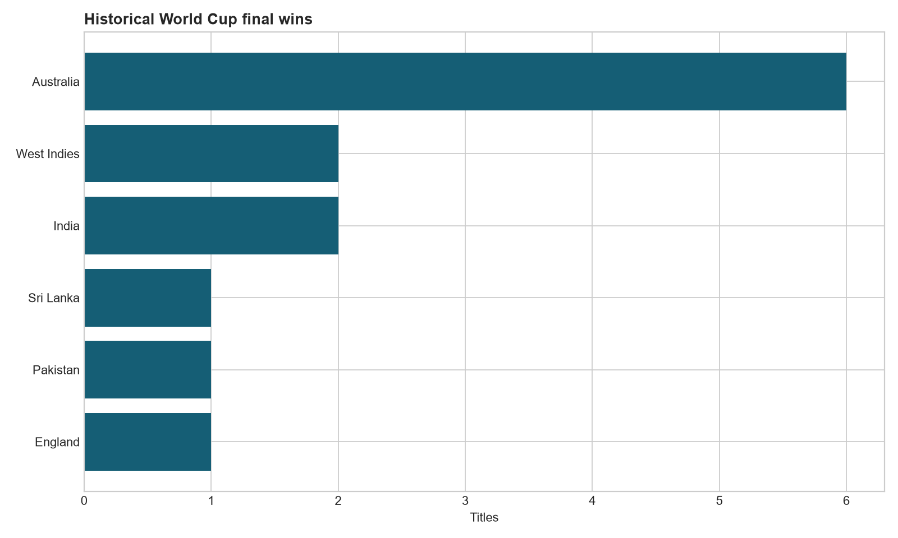
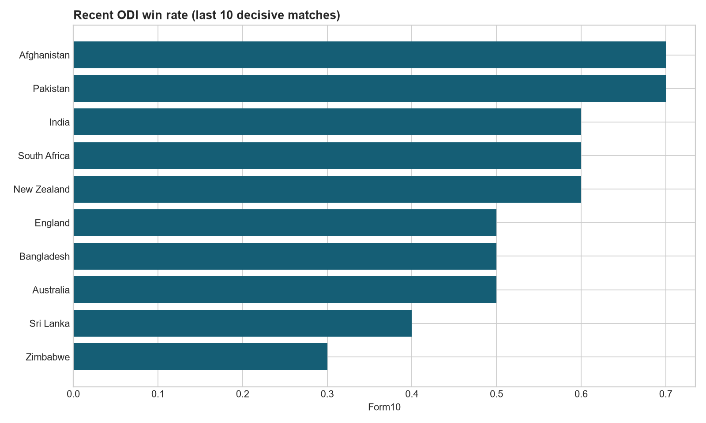
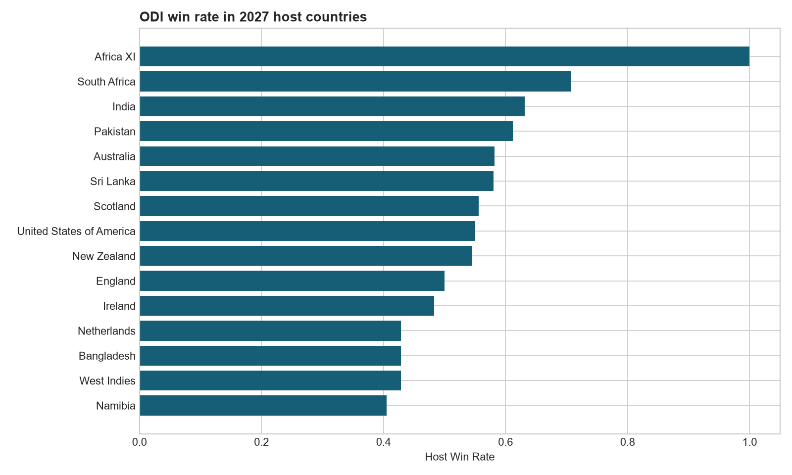
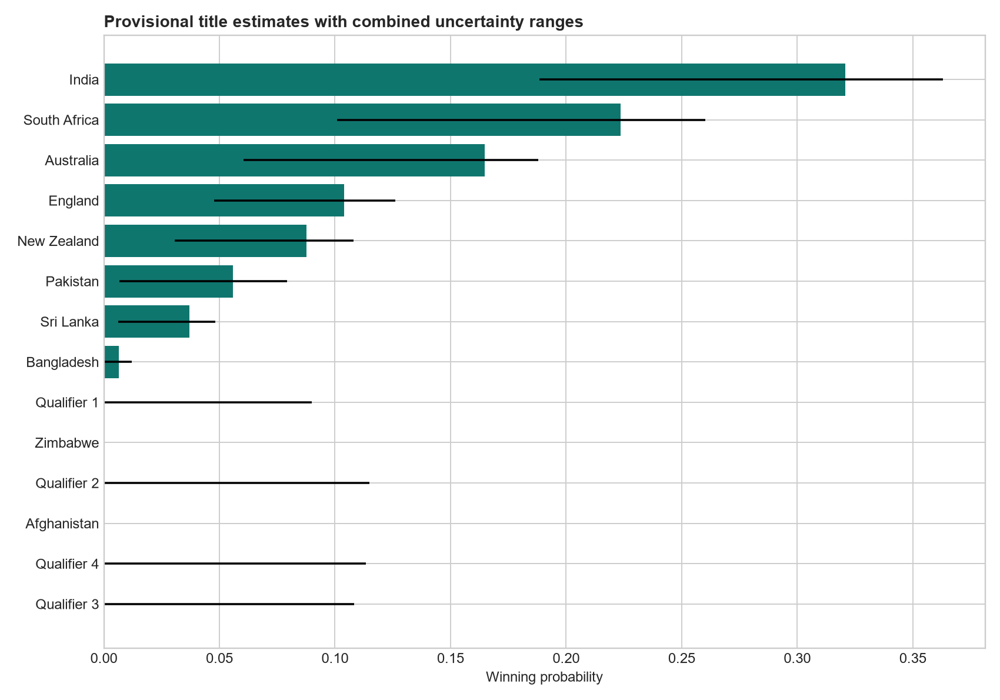

Project objective
Estimate pre-match win probabilities, compare them with transparent baselines, and translate the selected model into provisional tournament scenarios without changing the final chronological test period.
Improved from 0.6930 in the original model.
The final test covers 9 July 2023 to 2 November 2026.
Coverage rose from 18.1%. The experiment did not justify replacing the preserved model.
Data coverage and cleaning

The pipeline contains 2,617 unique match rows and 2,487 decisive outcomes. It excludes ties and no-results from binary fitting while retaining them in cleaned data.
Normalized venue and city aliases use direct host records, supplied World Cup locations, unique city-country matches, and explicit host names in event titles. The process leaves 142 matches unresolved.
Chronological test performance
| model | accuracy | roc_auc | log_loss | brier |
|---|---|---|---|---|
| historically_stronger | 0.5909 | 0.5909 | 0.6767 | 0.2418 |
| elo_only | 0.5989 | 0.6350 | 0.6697 | 0.2381 |
| overall_win_rate | 0.5909 | 0.6219 | 0.6693 | 0.2386 |
| home_host_advantage | 0.4733 | 0.4648 | 0.6958 | 0.2513 |
| blended_elo_recent_form | 0.5989 | 0.6323 | 0.6707 | 0.2385 |
| existing_logistic_rebuilt | 0.6070 | 0.6215 | 0.6920 | 0.2470 |
| regularized_logistic | 0.6070 | 0.6487 | 0.6755 | 0.2389 |
| catboost | 0.6150 | 0.6608 | 0.6534 | 0.2310 |
| hist_gradient_boosting | 0.6176 | 0.6395 | 0.6729 | 0.2395 |
| random_forest | 0.6150 | 0.6513 | 0.6608 | 0.2343 |
| regularized_logistic | 0.6070 | 0.6487 | 0.6755 | 0.2389 |
| xgboost | 0.6230 | 0.6541 | 0.6626 | 0.2346 |
| improved_catboost | 0.6150 | 0.6608 | 0.6534 | 0.2310 |
| original_reported_model | 0.5775 | 0.6067 | 0.6930 | 0.2483 |


Calibration and feature behavior


Temporal validation retained the uncalibrated CatBoost probabilities. SHAP explanations describe how the model behaved for each prediction; they do not establish causal effects.
Historical and current context



Provisional tournament scenarios
| Team | Semi-final | Final | Champion | Combined range |
|---|---|---|---|---|
| India | 83.2% | 51.9% | 32.1% | 18.8% to 36.3% |
| South Africa | 75.2% | 42.6% | 22.3% | 10.1% to 26.0% |
| Australia | 67.9% | 34.7% | 16.5% | 6.0% to 18.8% |
| England | 52.6% | 23.3% | 10.4% | 4.8% to 12.6% |
| New Zealand | 48.6% | 21.0% | 8.8% | 3.1% to 10.8% |
| Pakistan | 36.4% | 14.2% | 5.6% | 0.7% to 7.9% |
| Sri Lanka | 26.5% | 9.7% | 3.7% | 0.6% to 4.8% |
| Bangladesh | 8.7% | 2.4% | 0.7% | 0.0% to 1.2% |

Combined ranges include Monte Carlo variation, bootstrap model variation, weak/median/strong anonymous qualifier profiles, and both round-robin and random two-group formats. They are scenario ranges rather than formal confidence intervals.
Baseline significance
| baseline | improved_minus_baseline | ci_low | ci_high | meaningfully_better |
|---|---|---|---|---|
| historically_stronger | -0.0228 | -0.0553 | 0.0092 | False |
| elo_only | -0.0160 | -0.0363 | 0.0043 | False |
| overall_win_rate | -0.0157 | -0.0421 | 0.0112 | False |
| home_host_advantage | -0.0422 | -0.0810 | -0.0011 | True |
| blended_elo_recent_form | -0.0170 | -0.0382 | 0.0038 | False |
| existing_logistic_rebuilt | -0.0383 | -0.0722 | -0.0057 | True |
| regularized_logistic | -0.0225 | -0.0437 | -0.0029 | True |
| original_reported_model | -0.0397 | -0.0648 | -0.0153 | True |
CatBoost is statistically better than the original and rebuilt existing-logistic models. Its point estimates beat Elo-only, overall-rate, historical-strength and blended baselines, but the 95% paired intervals do not establish superiority over every strong simple baseline.
Methodology in plain language
Before each match, the pipeline records what each team had achieved up to that date. It compares Elo strength, recent form, scoring efficiency, venue familiarity, host context and World Cup experience. Expanding historical windows select model settings. A later validation block chooses calibration. Only then does the pipeline evaluate the untouched final period.
For tournament scenarios, the model converts team differences into match probabilities. Repeated simulated tournaments estimate advancement rates. Alternative qualifier strengths, model bootstraps and two plausible competition formats widen the reported ranges.
Limitations and next data
The match source begins in 2002 and remains incomplete. Surface labels approximate scoring environments rather than measured pitch composition. Qualifiers, fixtures, venues and squads remain unknown. Player availability, injuries, weather, complete historical ODIs, verified pitch types and the official schedule would most improve the forecast.
Rerun with python -m src.advanced_pipeline --runs 20000 --location-mode direct, followed by python -m src.final_reporting.